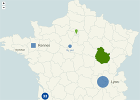
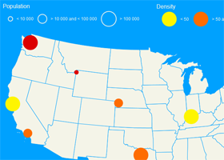
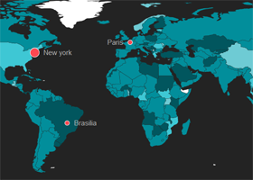
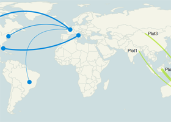

Ease the build of pretty data visualizations on dynamic vector maps

Map with some plotted cities, areas and zoom enabled. Try it »

Map with multiple plotted cities legends that handle different criteria. Try it »

Dataviz example : evolution of the population by country through the years. Try it »

Map with links between the plotted cities. Try it »
Download the latest version (2.2.0)
#Overview
jQuery Mapael is a jQuery plugin based on raphael.js that allows you to display dynamic vector maps.
For example, with Mapael, you can display a map of the world with clickable countries. You can also build simple dataviz by setting some parameters in order to automatically set a color depending on a value to each area of your map and display the associated legend. Moreover, you can plot cities on the map with circles, squares or images by their latitude and longitude. Many more options are available, read the documentation in order to get a complete overview of mapael abilities.
Mapael supports all modern browsers and Internet Explorer 9+. For older versions of IE, you can load jQuery 1.11.x and Raphael.js 2.1.2 as dependencies, most of the jQuery Mapael features should work fine.
Click here to download the lastest stable release of Mapael from GitHub. Additional maps are stored in the repository 'neveldo/mapael-maps'.
Key features
- based on jQuery and raphael.js. And optionnaly based on jQuery mousewheel for the zoom on mousewheel feature.
- Interactive. Set href, tooltip, add events and many more on the elements of your map.
- Plottable cities Cities can be plotted on the map with circles, squares, images or SVG paths by their latitude and longitude.
- Areas and plotted points colorization. Mapael automatically sets attributes like color and size to each area and plotted point displayed on map and generates an interactive legend in order to build pretty dataviz
- Links between cities. You can draw links between the cities of the map.
- Easy to add new maps. Build your own maps based on SVG paths
- SEO-friendly. An alternative content can be set for non-JS users and web crawlers
- Resizable Maps are easily resizable.
- Zoom Zoom and panning abilities (also on mobile devices).
#Basic code example
Here is the simplest example that shows how to display an empty map of the world :
HTML
<div class="container">
<div class="map">Alternative content</div>
</div>
Javascript
$(".container").mapael({
map : {
name : "world_countries"
}
});
Result
#Code examples
The basic examples only involve to call Mapael with a simple configuration object whereas advanced examples show advanced features or more complex integration of Mapael.
Basic
Advanced
#API reference (version 2.2.0)
All options are provided as an object argument of the function $.fn.mapael(Object options). Many of them have a default value. Default values are stored in the variables $.mapael.prototype.defaultOptions and $.mapael.prototype.legendDefaultOptions (Overriding default options example). If you want to re-define them, you can overload these two variables.
Through these mapael options, you can load a map (such as the world map, the USA map, or your own map) and customize the attributes of areas (such as the background-color, the tooltip content, link, text, attributes on mouseover, jquery events, etc). You can plot points on the map by latitude and longitude or x and y and set their attributes. You can add curved links between two points. You can enable the zoom feature that allow to zoom the map through the buttons or through the mousewheel. You can define legends for areas and/or plotted points in order to apply automatically some attributes to the elements of the map depending on the associated value. Here is the complete API documentation.
Parameter 'options' :
- map : main options for the map and default options for all plotted points and areas
- name : (String) Name of the map to load
- width : (Integer) Width of the map. If not specified, the map will get the width of its container.
- zoom : (Object) Options for the zoom (example).
- enabled : (Boolean, default value : false) Set to true in order to enable zoom features on the map.
- mousewheel : (Boolean, default value : true) Set to true in order to enable the zoom on mousewheel. This option requires jQuery mousewheel dependencie to work.
- touch : (Boolean, default value : true) Set to true in order to enable zoom and panning through touch actions.
- minLevel : (Integer, default value : 0) The minimum zoom level that the user can set.
- maxLevel : (Integer, default value : 5) The maximum zoom level that the user can set.
- step : (Float, default value : 0.25) Zoom ratio between two levels.
- animDuration : (Int, default value : 200) The duration of the zoom animation (this option have to be set to 0 in order to disable animation).
- animEasing : (String, default value : "linear") The easing function to use to animate the zoom action.
- buttons : (Object) Object of options that allow to define the cssClass, the title and the text content of the zoom related buttons. The object can contain the following keys : 'reset' to define the options for the reset button, 'in' to define the options for the zoom-in button, 'out' to define the options for the zoom-out button. Here are the available options for each button type :
- cssClass : (String) The CSS class for the zoom button.
- content : (String) The text content for the zoom ibutton.
- title : (String) The title of the the zoom button.
- init : (Objet) Set an initial zoom to the map that focus on a specific point (example). The point to focus on can be set by latitude and longitude or by x and y coordinates.
- level : (Integer) level of the initial zoom between 0 and maxLevel.
- x : (Integer) x coordinate of the point to focus on
- y : (Integer) y coordinate of the point to focus on
- latitude : (Float) latitude of the point to focus on
- longitude : (Float) longitude of the point to focus on
- beforeInit : (Callback) Hook called before the initialization of the map, that allows to draw custom elements right after the display of the areas. See the "Extend Mapael" section for more information.
- afterInit : (Callback) Hook called after the initialization of the map that allows to draw custom elements (example). See the "Extend Mapael" section for more information.
- cssClass : (String, default value : "map") CSS class name of the map container.
- tooltip : (Object) options for the tooltip
- cssClass : (String, default value : "mapTooltip") CSS class name of the tooltip container.
- css : (Object) Additional CSS properties for the tooltip container
- defaultArea / defaultPlot / defaultLink : (Object) Default options for all areas, plotted points or curved links of the map.
- attrs : (Object) Default Raphael attributes for all elements. Go to the Raphael reference to view available options.
- attrsHover : (Object) Raphael attributes on mouse hover for all elements. Go to the Raphael reference to view available options. You can set the animation duration with the 'animDuration' option.
- tooltip : (Object) Options for the tooltip
- content : (String or function) Tooltip content to display on mouse hover. It can be a string or a function that returns the content to display within the tooltip and takes as only parameter the options object of the element currently overflown.
- cssClass : (String) Additional CSS class(es) of the tooltip container. This option can be set to a specific value for each area or plotted point.
- overflow : (Object, default value : null) This option allows the tooltip to overflow from the right and/or bottom border of the container.
- right (boolean) : allows the tooltip to overflow from the right border of the container
- bottom (boolean) : allows the tooltip to overflow from the bottom border of the container
- offset : (Object, default value : null) This option allows to set a custom offset value between the tooltip and the cursor.
- left (int, default value : 10) : left offset value.
- top (int, default value : 20) : top offset value.
- text : (Object) Options for the label displayed within or next to the element
- content : (String) Text of the label
- attrs : (Object) Default Raphael attributes for each text within areas. Go to the Raphael reference to view available options.
- attrsHover : (Object) Default Raphael attributes on mouse hover for each text within areas. Go to the Raphael reference to view available options. You can set the animation duration with the 'animDuration' option.
- position : (String) Position of the text relative to the elements. Possible values : 'inner', 'right', 'left', 'top' or 'bottom'
- margin : (Integer or Object, default value : 10) Margin between the text and the plotted point. You can define a x,y margin by setting an object instead, eg : {x : 7, y: 9}. This margin object can also be used for a text within an area in order to apply an offset.
- href : (String) Href for the elements.
- target : (String) Target of the href for the elements (it can be set to a regular HTML target such as _blank, _self, ...).
- eventHandlers : (Object) Collection of handlers ('eventName' : function(e, id, mapElem, textElem, elemOptions) { ...}) that will be called when event 'eventName' occurs on elements. The key must match with a valid event like 'click' or 'dblclick' (example 1, example 2).
- cssClass : (String, default value : 'area', 'link' or 'plot' depending on the type of the considered element) CSS class set on each element.
- defaultPlot specific attributes :
- type : (String, default value : "circle") Plotted points shape : 'circle', 'square' or 'image' or 'svg'.
- size : (Integer, default : 15) The default size of all circles and squares. For image and svg plotted points, size must be specified with width and height options, see below.
- width : (Integer) The default width of all image and svg plotted points.
- height : (Integer) The default height of all image and svg plotted points.
- url : (String) For image plotted points only. Url of the image to display.
- path : (String) For svg plotted points only. SVG path to display.
-
legend : (Object) Options to build the legends of plotted points and areas. It allows to define the display of the legends boxes and to set specific options by slice of values.The 'area' entry let you define options for the areas legend. The 'plot' entry let you define options for the plotted points legend.
- redrawOnResize : (Boolean, default value : true) Redraw the legen(s) of the map at window resize.
-
area / plot : (Object or array of Object). Options for the areas or plotted points legend (example 1, example 2). It can be just an Object of options, or an array of objects of options in case of a multiple criteria legend. Mapael allows you to handle multiple criteria for your map by setting several values to each elements and configuring multiple legends here (example).
- mode : (String, default value : "vertical") Orientation of the legend. This option can be set to 'vertical' or 'horizontal' (example).
- exclusive : (Boolean, default value : false) Set to true to allow the user to activate only one item from the legend at a time.
- cssClass : (String, default value : "mapLegend") CSS class of the container for the areas legend.
- display : (Boolean, default value : true) Display the legend.
- marginLeft : (Integer, default value : 10) Margin left for each line of the legend.
- marginLeftTitle : (Integer, default value : 5) Margin left for title of the legend.
- marginLeftLabel : (Integer, default value : 10) Margin left for the label of each slice.
- marginBottom : (Integer, default value : 10) Margin bottom under each line of the legend.
- marginBottomTitle : (Integer, default value : 10) Margin bottom under the title of the legend.
- titleAttrs : (Object) Raphael attributes for the title of the legend. Go to the Raphael reference to view available options.
- labelAttrs : (Object) Raphael attributes for the labels of each slice. Go to the Raphael reference to view available options.
- labelAttrsHover : (Object) Raphael attributes on mouse hover for the labels of each slice. Go to the Raphael reference to view available options.
- hideElemsOnClick : (Object) Hide map elements when user clicks on a label of the legend.
- enabled : (Boolean, default value : true) If true, map elements are hidden when user clicks on a label of the legend.
- opacity : (Float, default value : 0.2) Opacity for the hidden elements.
- animDuration : (Integer, default value : 300) Number of milliseconds for the animation duration when hiding the matching elements from the map.
-
slices :(Array, default : []) Array of objects of options for each slice of values. For each slice, options are provided as an object. A slice can be defined with a min and a max value (example) or with a fixed value ‘sliceValue’ (example). It allows to set the label to display next to each slice in the legend box and to set the attributes that will be applied to each elements of the map (areas or plotted points) whose the value matches with the legend slice.
- sliceValue : (String or Float) : The value for the slice. This option can be used instead of the ‘min’ and ‘max’ options in order to set a fixed value instead of an interval of values for the slice.
- min : (Float) The minimal value for the interval defining the slice
- max : (Float) The maximal value for the interval defining the slice
- label : (String) The label of the slice for the legend
- display : (Boolean, default : true) Display the slice in the legend
- clicked : (Boolean, default : false) Set to true in order to initialize the legend item in the 'clicked' state on the map load.
- + Overload : all options from map.defaultArea (in case of a areas legend) or map.defaultPlot (in case of a plotted points legend) can be overloaded here. It allows to set the attributes that will be applied to each elements of the map (areas or plotted points) whose the value matches with the legend slice. These overloading attributes will also be applied to the elements displayed in the legend.
- legendSpecificAttrs : (Object) Raphael attributes that will be only applied on the elements displayed in the legend box and not on the elements displayed in the map. Go to the Raphael reference to view available options (example).
-
areas : (Object) List of specific options for each area to display on the map. Areas must be identified according to the ids from the JS file of the intended map. For each area, options are provided as an object :
- value : (Float or array) Value to associate to the area. It allows the point attributes to be overloaded by legend attributes if the value matches with a slice defined in the legend. It can be an array of values if you set a multiple criteria legend for areas.
- + Overload : all options from map.defaultArea and options from the associated legend if it exists can be overloaded here. For example, you can redefine specific values for attrs, attrsHover, tooltip content, etc.
-
plots : (Object) Array of specific options for each plotted points to display on the map. A plotted point can be positioned with a (latitude, longitude), a (x, y) couple of coordinates or through the plotsOn option in order to add a point within a specific area of your map. For each plotted point, options are provided as an object :
- value : (Float or array) Value to associate to the plotted point. It allows the point attributes to be overloaded by legend attributes if the value matches with a slice defined in the legend. It can be an array of values if you set a multiple criteria legend for plotted points.
- latitude : (Float) latitude of the plotted point
- longitude : (Float) longitude of the plotted point
- x : (Float) X coordinate of the plotted point
- y : (Float) Y coordinate of the plotted point
- plotsOn : (String) Area ID where to plot the point on
- + Overload : all options from map.defaultPlot and options from the associated legend if it exists can be overloaded here. For example, you can redefine specific values for attrs, attrsHover, tooltip content, etc.
-
links : (Object) Collection of curved links to draw on the map. For each link, options are provided as an object (example) :
- between : (Array) Array of two elements where the first one is the source of the link and the second one is the destination. Each can be a plotted point ID, an object that stores a latitude and a longitude ({latitude : …, longitude : …}), or an object that stores a x and y coordinates ({x : …, y: …}) (example).
- Overload : all options from map.defaultLink and options from the associated legend if it exists can be overloaded here. For example, you can redefine specific values for attrs, attrsHover, tooltip content, etc.
#Update the map data
Update map data is as simple as triggering an 'update' event on the map container with new data provided as argument. All attributes from plotted points and areas can be updated (including their related text, contents of the tooltips , ...).
Update the values of plotted points and areas connected to a legend will automatically update their attributes according their new slices.
$(".container").trigger('update', [options]);
- options : (Object) Update options that can contains the following entries :
- mapOptions : (Object) Object that contains the options to update for existing plots, areas or legends. If you want to send some areas, links or points to the front of the map, you can additionnaly pass the option 'toFront: true' for these elements.
- replaceOptions : (Boolean) whether mapsOptions should entirely replace current map options, or just extend it.
- newPlots : (Object) new plots to add to the map.
- newLinks : (Object) Object containing the new links to draw on the map.
- deletePlotKeys : (array or string) plots to delete from the map (array, or "all" to remove all plots).
- deleteLinkKeys : (array or string) links to remove from the map (array, or "all" to remove all links).
- setLegendElemsState : (string or object) the state of legend elements to be set : 'show' (default) or 'hide'. This options can also be set with an object that contains several pairs of legendCssClass/state, for instance : {"areaLegend": "hide"}. (Example)
- animDuration : (Integer, default value : 0) Number of milliseconds for the animation duration.
- afterUpdate : (Callback) Hook called after updating the map. See the "Extend Mapael" section for more information.
Here is examples of refreshable map : dataviz example, Misc attributes updated on the map of France, Map with some updates on links performed
#Extend Mapael
Mapael can easily be extended with several hooks and events.
Hook map.beforeInit
beforeInit : function(container, paper, options) {...}
This hook is called before the initialization of the map, right after the display of the areas.
- container : (Object) Map container
- paper : (Object) Raphael Object
- options : (Object) Map options
Hook map.afterInit
afterInit : function(container, paper, areas, plots, options) {...}
This hook is called after the initialization of the map.
- container : (Object) Map container
- paper : (Object) Raphael Object
- areas : (Object) Drawn areas
- plots : (Object) Drawn plotted points
- options : (Object) Map options
Here is an example of use with the afterInit hook that allows to position images on the map : afterInit example
Hook afterUpdate
afterUpdate : function(container, paper, areas, plots, options) {...}
This hook is called after each update of the map ('update' event triggered).
- container : (Object) Map container
- paper : (Object) Raphael Object
- areas : (Object) Drawn areas
- plots : (Object) Drawn plotted points
- options : (Object) Map options
- links : (Object) Drawn links
Event afterZoom
This event is triggered after a zoom action on the map. The event brings these data :
- x1 : (int) left coordinate of the visible part
- y1 : (int) top coordinate of the visible part
- x2 : (int) right coordinate of the visible part
- y2 : (int) bottom coordinate of the visible part
Event afterPanning
This event is triggered after a panning action on the map. The event brings these data :
- x1 : (int) left coordinate of the visible part
- y1 : (int) top coordinate of the visible part
- x2 : (int) right coordinate of the visible part
- y2 : (int) bottom coordinate of the visible part
#Filter the elements to show on the map depending on values intervals
The elements to show on the map can be filtered depending on values intervals by triggering a 'showElementsInRange' event on the map container :
$(".mapcontainer").trigger("showElementsInRange", [opt]); . Examples : Map with a range selection for plotted cities, Map with a range selection for areas. Available options :
- hiddenOpacity : (float) Opacity for hidden element (default = 0.3)
- animDuration : (int) Animation duration in ms (default = 0)
- afterShowRange : (callback) Function called after the range of elements is shown
- ranges : (object) The range to show, example:
opt.ranges = {
'plot' : {
0 : { // valueIndex
'min': 1000,
'max': 1200
},
1 : { // valueIndex
'min': 10,
'max': 12
}
},
'area' : {
{'min': 10, 'max': 20} // No valueIndex, only an object, use 0 as valueIndex (easy case)
}
}
#Zoom feature
Mapael allows you to trigger an event 'zoom' on the map container.
$(".mapContainer").trigger("zoom", options);
options (Object) : Zoom options. The point to focus on can be set by latitude and longitude, by x and y coordinates or with an area ID. The following options are available :
- animDuration : (Integer, default value : 0) The duration of the zoom animation
- level : (Integer or string) The level of the zoom between 0 and maxLevel. In order to zoom-in or zoom-out relatively to the current zoom level, you can set the level to a negative integer (eg : -5), or a string beginning by '+' (eg : '+5').
- fixedCenter : (Boolean) Set to true in order to preserve the position of x,y in the canvas when zoomed
- x : (Integer) x coordinate of the point to focus on
- y : (Integer) y coordinate of the point to focus on
Or
- latitude : (Float) latitude of the point to focus on
- longitude : (Float) longitude of the point to focus on
Or
- area : (String) area ID to focus on
- areaMargin : (Integer) margin (in pixels) around the area
The current zoom data can be retrieved with the data from "zoomData" key :
$(".mapContainer").data('mapael').zoomData.zoomLevel;
$(".mapContainer").data('mapael').zoomData.zoomX;
$(".mapContainer").data('mapael').zoomData.zoomY;
$(".mapContainer").data('mapael').zoomData.panX;
$(".mapContainer").data('mapael').zoomData.panY;
Here are some examples of use of the "zoom" event : Zoom on specific areas, Zoom on click
#Create your own vector map for jQuery Mapael
A complete tutorial that explains you how to create your own vector map for jQuery Mapael is available here.
Some usefull online tools are available to ease the work :
If you need a special integration of jQuery Mapael in your application, a custom feature or map, feel free to contact me at contact{at}vincentbroute{dot}fr.